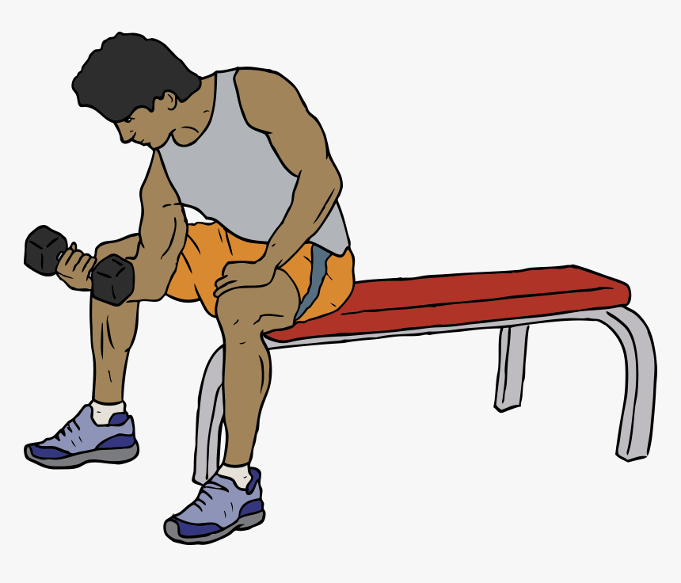

Hi! My name is Andrew. I am a college student working on my career in Information Technology. I have always enjoyed video games my whole life. It is my favorite hobby. Something about the interactiveness surrounding these games, and the lovely story they provide, is a real piece of art. I love being immersed in these worlds.

For my hobbies, outside of video games, I enjoy going to the gym. It takes the edge off by lifting heavy weights. Taking walks outside has been very calming as well. The sound of nature and the beautiful breeze allow me to think deeply about topics and situations I have been struggling with. I have started to pick up on reading as well. My main source of reading is comic books, mostly Batman-related, but also manga as well. I will soon try to pick up and read more Sci-Fi genres as well, since those intrigue me the most.